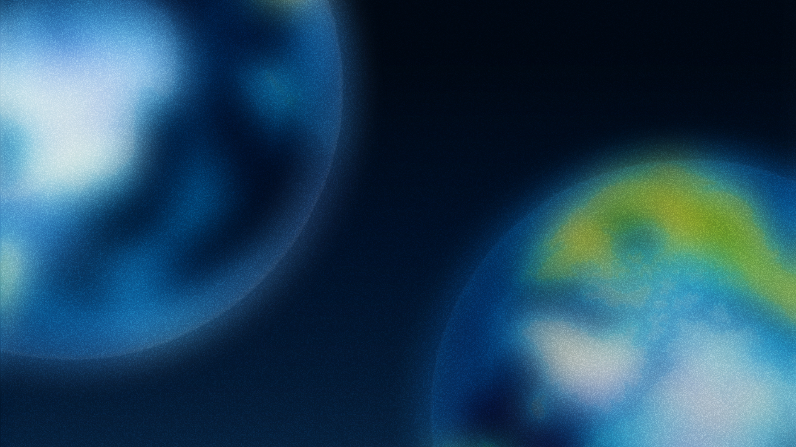
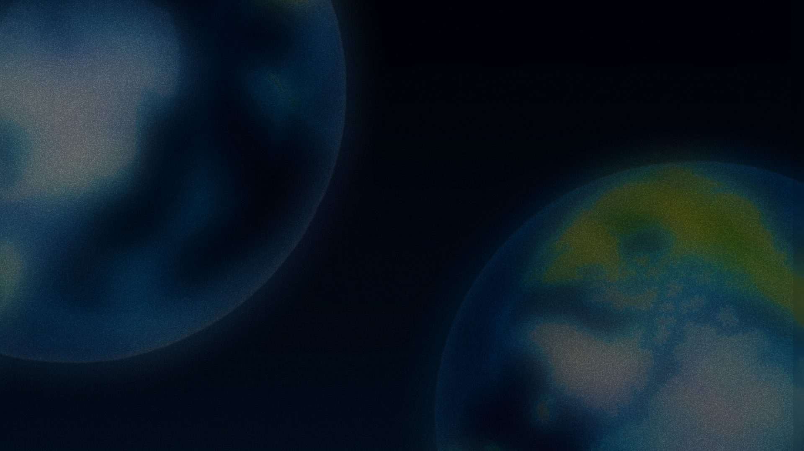

Auroras sobre la Tierra


¿Y si desaparecierael campo magnético?
Si la Tierra no tuviera campo magnético, el viento solar golpearía directamente nuestra atmósfera. Con el tiempo, se llevaría gran parte del aire y del agua, y la radiación del sol llegaría sin filtro a la superficie. Las auroras desaparecerían, pero eso sería lo de menos: la vida tal como la conocemos no podría sostenerse. Marte es un recordatorio de lo que pasa cuando un planeta pierde ese escudo.
Lo invisible sostiene nuestra vida diaria: el campo magnético, como otras fuerzas esenciales, nos recuerda el valor de aquello que protege y sostiene el mundo sin que lo notemos.
Proceso
El Kp es un signo: el pulso que se ve, la perturbación geomagnética que representa, y la protección planetaria que sugiere. Se acotó el fenómeno a los polos y se eligió NOAA como fuente verificable, partiendo de una idea simple: si el Kp se traduce como latido, el escudo invisible de la Tierra se vuelve algo que se puede sentir, no solo medir. La metáfora tradujo el dato en pulso, y el concepto se volvió pregunta:
¿Qué pasa si ese pulso se detiene?